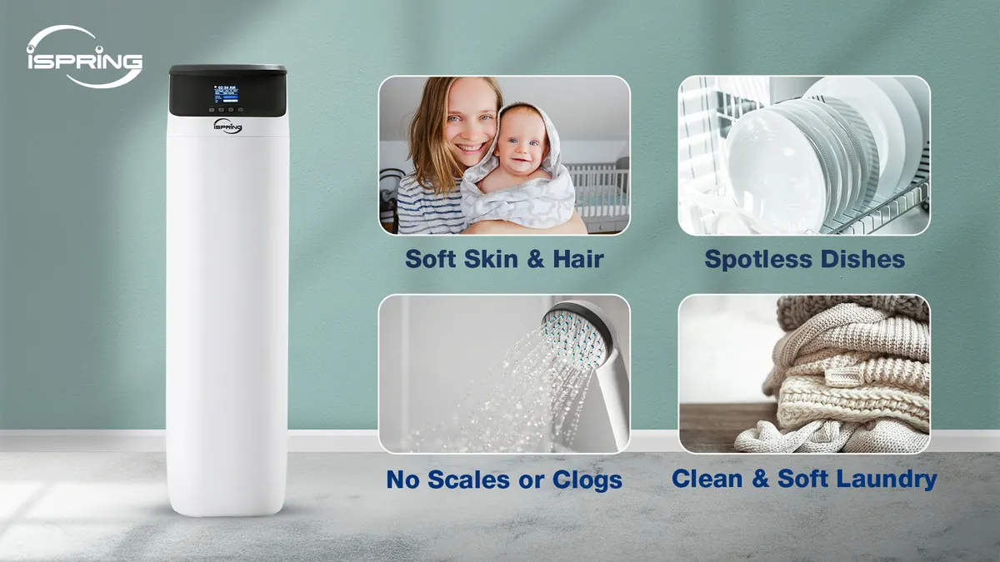
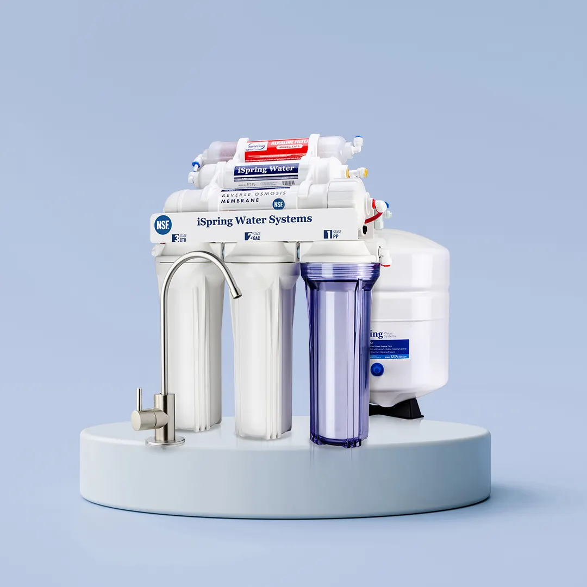

How Clean, Soft Water Can Make a Difference in Your Home This Season
Introduction
Winter often brings cold weather, dry skin, and increased reliance on hot water throughout your home. As temperatures drop, you might find yourself taking hotter showers, doing more laundry, and using your appliances more frequently. But have you ever considered how the quality of your water affects your comfort and health during these chilly months? Investing in a water softener and a reverse osmosis system from Angle Stop Plumbing can transform your winter experience, providing cleaner, softer water that benefits your entire household.

Why Water Quality Matters More in Winter
When winter arrives, we tend to spend more time indoors and use more hot water for bathing, cleaning, and cooking. Hard water, which is rich in minerals like calcium and magnesium, can make these everyday activities less pleasant. It can lead to dry skin, dull hair, and buildup in your appliances, making them less efficient and potentially shortening their lifespan. Clean, soft water is especially important when the air is already dry, as it helps maintain moisture in your skin and reduces irritation.
The Advantages of a Water Softener
A water softener from Angle Stop Plumbing works by removing excess minerals from your water supply. The result is water that feels smoother on your skin and hair and helps prevent the annoying white spots on your dishes and fixtures. During winter, this can be a game-changer:
- Softer Skin and Hair: Hard water can dry out your skin and hair, especially when combined with winter’s low humidity. Soft water helps keep your skin hydrated and your hair shiny.
- Longer-Lasting Appliances: Soft water prevents scale buildup in water heaters, dishwashers, and washing machines, improving their efficiency and extending their life.
- Cleaner Laundry: Clothes washed in soft water come out cleaner and softer, which is ideal when you’re bundling up in layers all season.
The Power of Reverse Osmosis Filtration
While a water softener improves the feel and function of your water, a reverse osmosis (RO) system from Angle Stop Plumbing takes purification a step further. RO systems remove contaminants, including chlorine, lead, and other impurities, delivering crystal-clear water right from your tap. This is especially important in winter, when you may be making more hot drinks, soups, and stews.
- Better-Tasting Water: Enjoy pure, fresh-tasting water for drinking and cooking—no need to buy bottled water.
- Healthier Living: Reduce exposure to unwanted chemicals and contaminants, supporting your family’s health during cold and flu season.
- Convenient Hydration: With filtered water always available, you’ll be more likely to stay hydrated, which is crucial for fighting winter dryness.

Why Choose Angle Stop Plumbing?
Angle Stop Plumbing specializes in high-quality water treatment solutions tailored to your home’s unique needs. Their expert technicians ensure proper installation and maintenance, so you can enjoy the benefits of soft, clean water all winter long. With reliable service and top-of-the-line products, you can trust Angle Stop Plumbing to keep your water safe and your family comfortable.
Conclusion
This winter, don’t let hard or contaminated water add to the season’s challenges. A water softener and reverse osmosis system from Angle Stop Plumbing can help you enjoy softer skin, tastier water, and a healthier home environment. Make the switch and experience the difference clean, soft water can make for you and your loved ones.